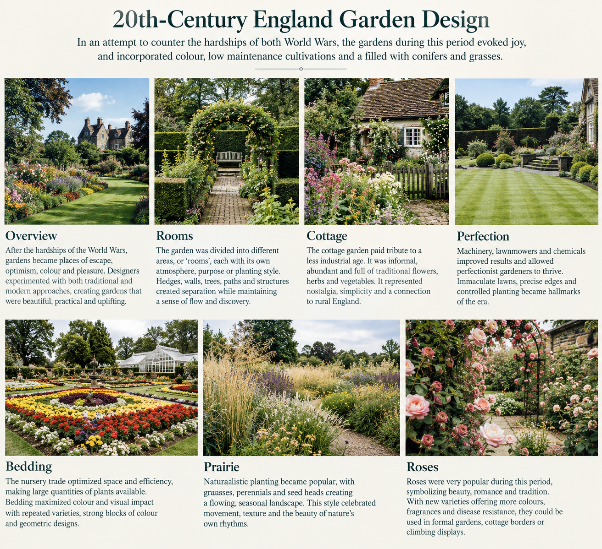
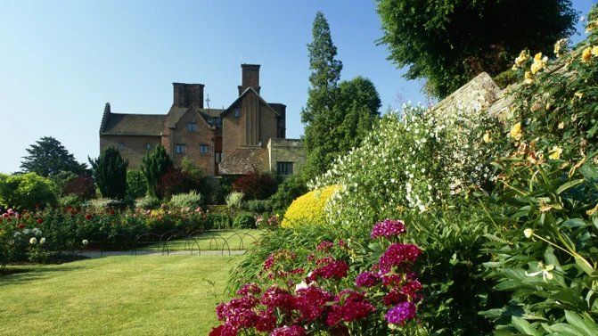

20th Century England Garden Design

20th-Century England Garden Design
20th-century English garden design** was shaped by enormous social and cultural changes. The two World Wars, industrialization, changing patterns of employment, and the development of new gardening technologies all influenced how gardens were designed and maintained. After the hardships and uncertainty of the World Wars, gardens increasingly became places of **escape, optimism, colour, and pleasure**. Rather than simply being formal demonstrations of wealth, gardens could provide a sense of comfort, beauty, and connection to nature. Garden designers experimented with both traditional and modern approaches. The period saw the continued popularity of **cottage gardens and roses**, while also introducing more naturalistic planting styles, ornamental grasses, conifers, herbaceous borders, and highly organized bedding displays. A particularly important characteristic of the period was the contrast between **order and naturalism**. Some gardens were meticulously maintained, with immaculate lawns and carefully arranged flower beds, while others sought to imitate the irregularity and movement of the natural landscape.In an attempt to counter the hardships of both World Wars, the gardens during this period evoked joy, and incorporated colour, low maintenance cultivations and a filled with conifers and grasses.
Rooms
Dividing the Garden into Different Experiences The concept of garden rooms became an important way of organizing the landscape. Instead of treating the garden as one continuous space, designers divided it into separate areas, with each area having its own atmosphere, purpose, planting style, or visual character. Hedges, walls, trees, pathways, changes in elevation, pergolas, gates, and architectural features could be used to separate these spaces without necessarily making the garden feel disconnected. A garden might contain a formal lawn, a rose garden, a secluded seating area, a cottage-style border, a productive vegetable garden, and a more naturalistic planting area. Moving between these spaces created a sense of discovery and progression. The idea of garden rooms also allowed designers to combine seemingly different styles within one landscape. A highly formal area could transition into a relaxed cottage garden, while a structured rose garden could lead into a naturalistic prairie-style planting. The garden therefore became almost like a series of outdoor rooms, each providing a different emotional and visual experience. Areas that divided the garden themes.Cottage
A Tribute to a Less Industrial Age The cottage garden represented nostalgia for a simpler, less industrial way of life. During a century characterized by rapid technological development, urbanization, machinery, and two devastating wars, the informal cottage garden offered an image of tradition, domesticity, and rural England. Cottage-style planting was typically abundant and informal. Rather than arranging plants in rigid geometric patterns, gardeners combined flowers of different heights, colours, textures, and flowering periods. Typical characteristics included: * Dense and abundant planting * Traditional flowering plants * Informal paths * Climbing roses and other climbers * Herbaceous perennials * Cottage vegetables and herbs * Self-seeding plants * A mixture of colours and textures Plants were often allowed to intermingle rather than being separated into strict blocks. This created the characteristic appearance of a garden that seemed naturally abundant rather than meticulously designed. The cottage garden was therefore more than a planting style. It represented an emotional connection to an idealized English countryside and provided a contrast to the increasingly industrial world surrounding it.Perfection
Machinery, Chemicals, and the Pursuit of the Ideal Garden The 20th century brought significant technological advances to gardening. Lawnmowers, mechanical tools, fertilizers, pesticides, herbicides, irrigation systems, and improved horticultural techniques made it possible to maintain gardens to an increasingly precise standard. The lawn became particularly important. A perfectly cut, uninterrupted expanse of green grass could act as the visual foundation of a garden, contrasting strongly with colourful flower beds and architectural planting. For the perfectionist gardener, technology offered greater control over the landscape. Edges could be kept sharply defined, weeds could be controlled, lawns could be cut consistently, and plants could be maintained to produce abundant flowers. This resulted in gardens where precision, cleanliness, symmetry, and maintenance were highly valued. However, this approach also created an interesting contrast within 20th-century garden design. While technology made increasingly controlled gardens possible, other designers were moving in the opposite direction toward **naturalistic planting and ecological-looking landscapes. The period therefore saw two competing ideals: The perfect garden: controlled, immaculate, ordered, and highly maintained. The natural garden: informal, spontaneous, diverse, and inspired by nature. Both became important influences on modern garden design.Bedding
The Nursery Trade, Efficiency, and Maximum Colour The development of the commercial nursery and horticultural trade had a major influence on 20th-century gardening. Improved plant production, transportation, and commercial cultivation made large quantities of plants available to gardeners. This encouraged the widespread use of bedding plants. Bedding involved planting large numbers of relatively small plants, often arranged in groups, blocks, patterns, or geometric designs. The objective was to create an immediate and highly visible display of colour. The nursery industry increasingly optimized the production of plants, allowing gardeners and public gardens to purchase large quantities of uniform specimens. Bedding therefore became a highly efficient way of producing a strong visual effect. Common characteristics included: * Large quantities of plants * Repeated plant varieties * Strong blocks of colour * Seasonal displays * Geometric arrangements * Carefully maintained edges * Rapid replacement of plants as seasons changed The approach reflected the increasing influence of efficiency and commercial horticulture. Rather than waiting years for a garden to mature, bedding could produce an immediate decorative effect. In this sense, the garden became both a landscape and a display of horticultural productivity. The Nursery Trade optimized space, and efficiency. Bedding maximized product.Prairie
Naturalistic Planting and the Influence of Nature The prairie style represented a major shift away from traditional formal planting. Instead of arranging plants into clearly separated flower beds, designers began exploring ways to create planting that appeared more natural, fluid, and interconnected. Ornamental grasses became particularly important. Their movement in the wind, fine textures, and changing appearance throughout the seasons introduced a sense of dynamism to the garden. Prairie-inspired planting commonly combined: * Ornamental grasses * Herbaceous perennials * Seed heads * Plants of different heights * Repeated drifts of plants * Naturalistic groupings * Seasonal variation Rather than producing a garden that looked perfectly controlled, the objective was to create the impression of a natural plant community. Planting was often arranged in broad drifts rather than isolated specimens. Repetition helped maintain visual unity while allowing individual plants to move, flower, seed, and change throughout the year. This approach was particularly significant because it challenged the idea that a beautiful garden had to be perfectly manicured. The prairie aesthetic demonstrated that movement, imperfection, seasonal change, and natural processes could themselves be beautiful. The Character of the 20th-Century English Garden Ultimately, 20th-century English garden design was characterized by contrast and experimentation. The garden could simultaneously celebrate: * **Tradition** through cottage gardens and roses * **Technology** through machinery and improved horticultural practices * **Efficiency** through commercial bedding production * **Perfection** through immaculate lawns and formal maintenance * **Naturalism** through prairie-style planting * **Colour and joy** as an emotional response to difficult historical circumstances * **Garden rooms** as a way of creating different experiences within one landscape Rather than developing in a single direction, English garden design during the 20th century became a dialogue between control and freedom, tradition and modernity, industry and nature. The result was a diverse garden culture in which the immaculate lawn could exist beside a wild-looking meadow, and a traditional rose garden could coexist with modern naturalistic planting. This mixture of approaches became one of the defining characteristics of the modern English garden.Naturalistic plantingRoses
A Timeless English Classic The rose remained one of the most important and beloved plants in English gardens throughout the 20th century. Roses had a long association with English horticultural tradition, making them a natural choice for gardeners who wanted to maintain a connection with the past while incorporating modern garden design. Roses could be used in many different ways. They could form formal rose gardens, climb over walls and arches, grow against buildings, appear within cottage borders, or provide focal points within larger landscapes. Their popularity was supported by extensive horticultural development. New varieties offered gardeners an increasing range of: * Colours * Flower forms * Fragrances * Growth habits * Flowering periods * Disease resistance * Uses within the landscape Roses also bridged the divide between formal and informal gardening. A rose could be carefully trained and displayed in a highly structured garden, or allowed to grow more freely within a cottage-style border. Their enduring popularity reflects their ability to combine beauty, fragrance, tradition, romance, and versatility. For the 20th-century English garden, the rose remained a timeless symbol of the country's horticultural heritage while continuing to adapt to changing gardening styles.